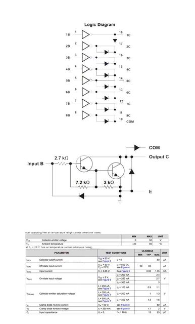
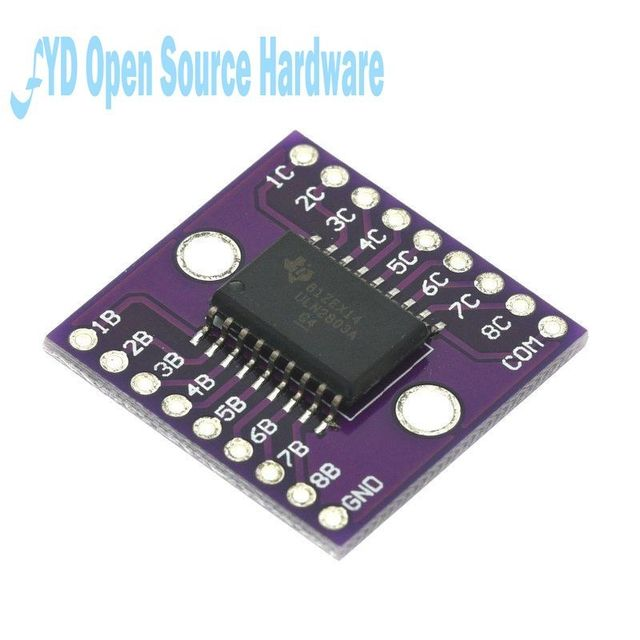
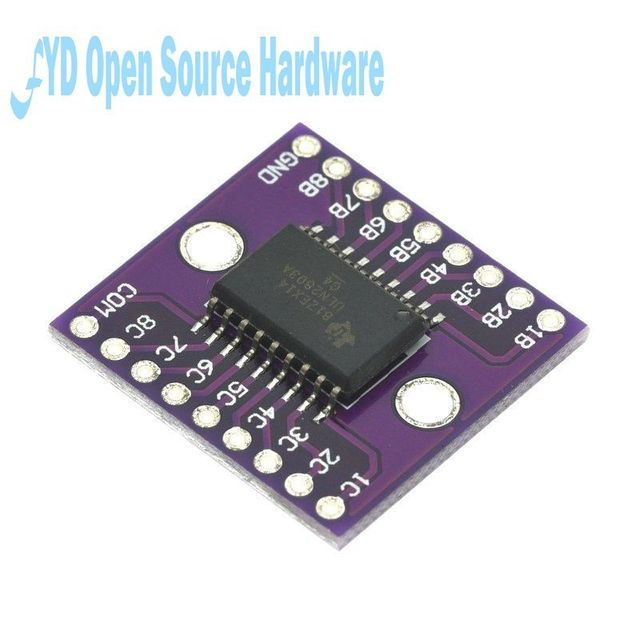
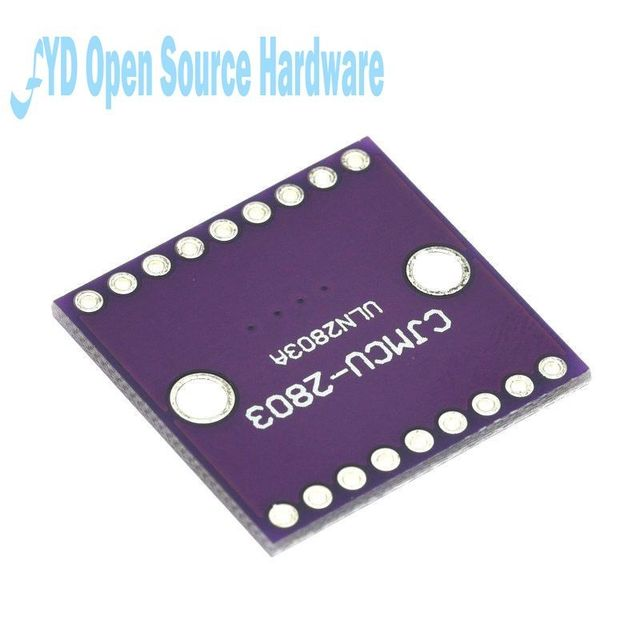

Product introduction:
ULN2803A consists of 8 NPN Darlington tubes with built-in clamping diodes for inductive loads. Multiple Darlingtons can be connected in parallel to drive high current loads.The ULN2803A device is a 50V,500 mA Darlington transistor array. The device consists of eight PAIRS of NPN Darlington with high voltage output and common cathode clamp diodes for switching inductive loads. Each Darlington pair has a collector current rating of 500mA. The Darlington pairs can be connected in parallel to increase current capacity. Applications include relay drivers, hammer drivers,lamp drivers,display drivers (LED and gas discharge),line drivers and logic buffers. Each darlington pair of ULN2803A devices has a 2.7K w series base resistor and can work directly with TTL or 5V CMOS devices.
Product features:
·500mA rated collector current (single output)
· High voltage output: 50V
·Output clamp diode
·Input compatible with various logical types



